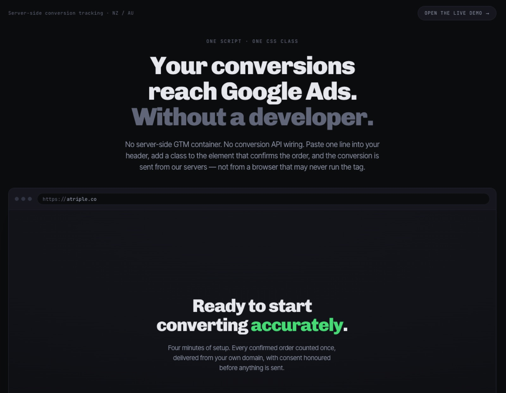
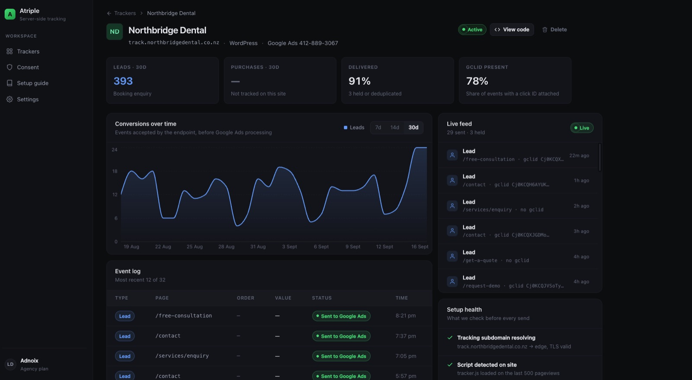
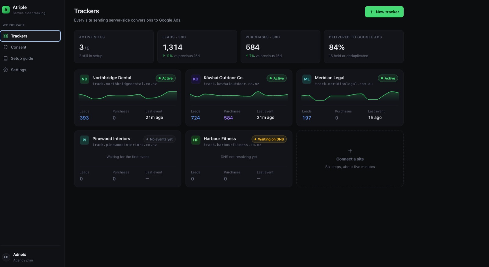
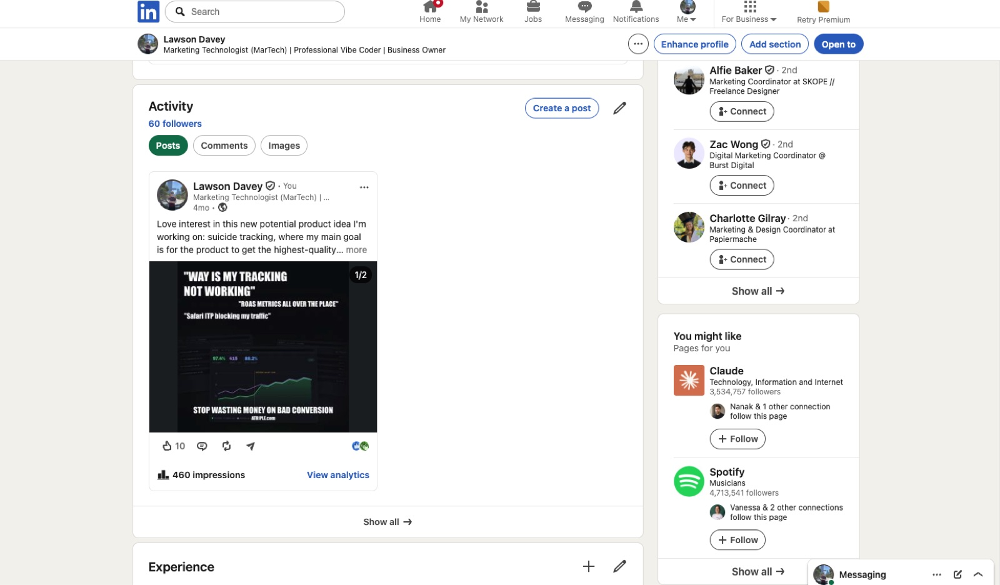
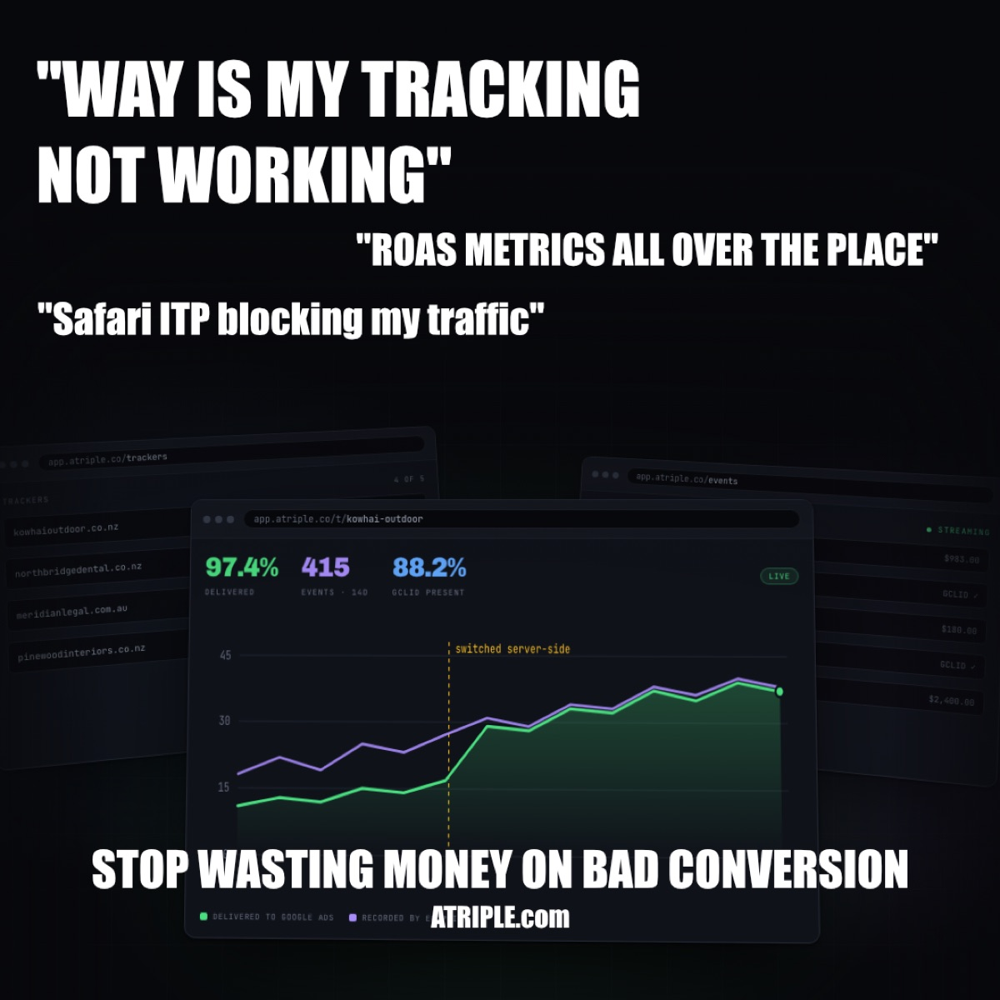

An idea for server-side conversion tracking that marketers could set up themselves: paste one script, add one CSS class, and conversions reach Google Ads. I researched it, built a working prototype, tested it over two rounds, and let the evidence decide what happened next.

Safari’s tracking prevention, cookie limits and ad blockers stop browser tags from reporting conversions, so Google Ads optimises on incomplete data. Server-side tracking fixes much of this, but it needs technical skills most small businesses and many agencies don’t have. Agencies told me they lose 1–5+ hours a month debugging tags they still don’t fully trust.
It’s the same problem I work on in my day job, managing Google Ads conversion tracking.




Two build-measure-learn rounds, with pass marks set before each test:
The evidence said customers want the problem handled, not another tool to learn. So Atriple pivoted from software to a managed tracking service under Pulsr Digital. Pulsr does the setup on free tools such as Google Tag Gateway and Stape, then monitors it monthly using the Atriple dashboard. The proposed price is a NZ$300 setup fee plus NZ$49 a month.
“Great work on the strategic document… the way you have used canvases to generate real insights is wonderful… a great Wiki, well documented.”Tutor feedback, BDI322.1 (graded A+)